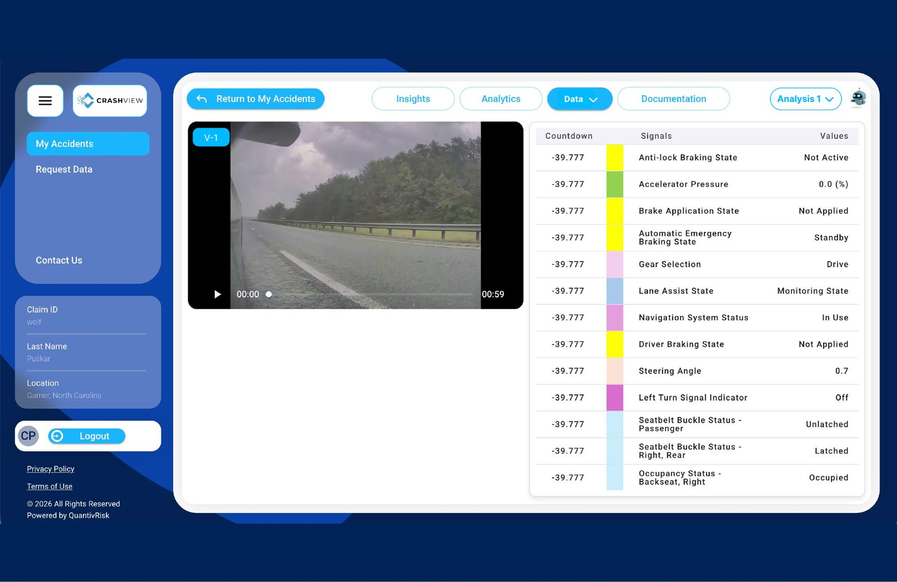
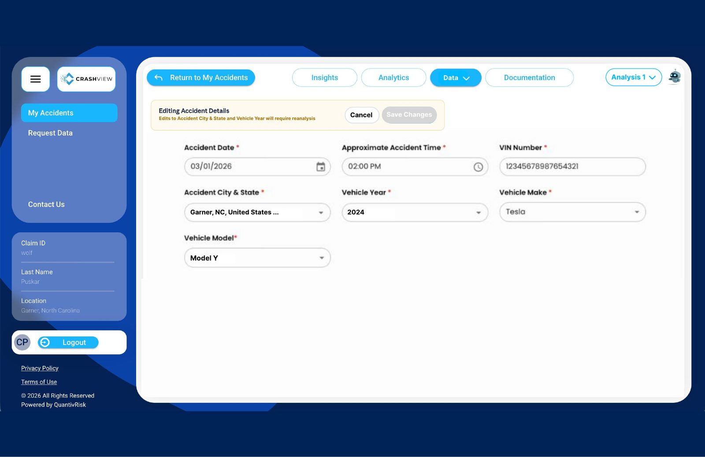
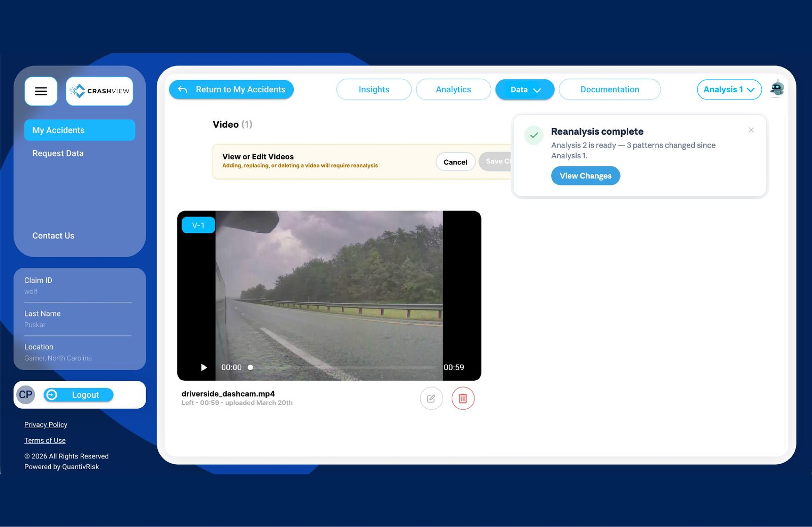
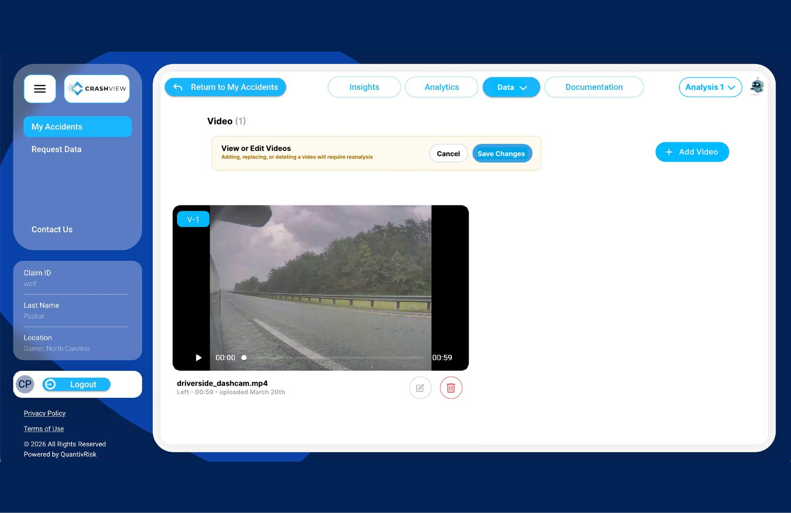
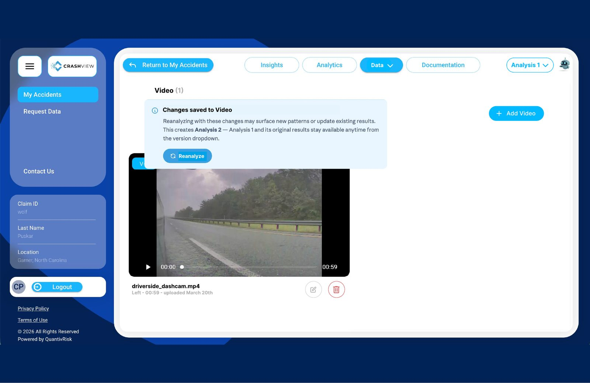
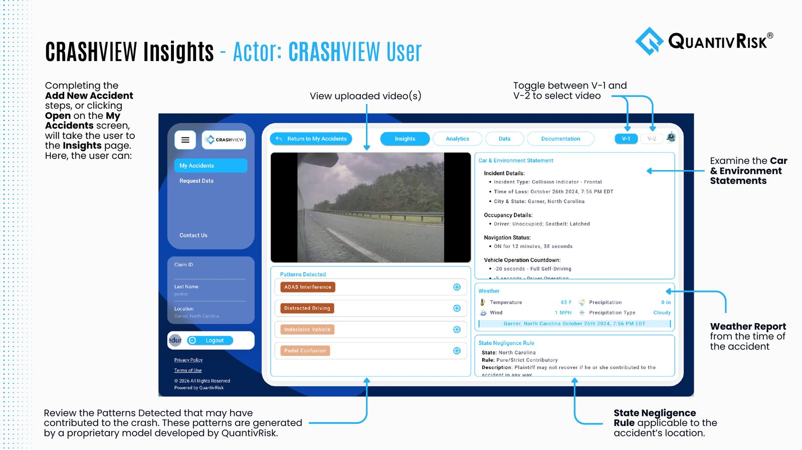
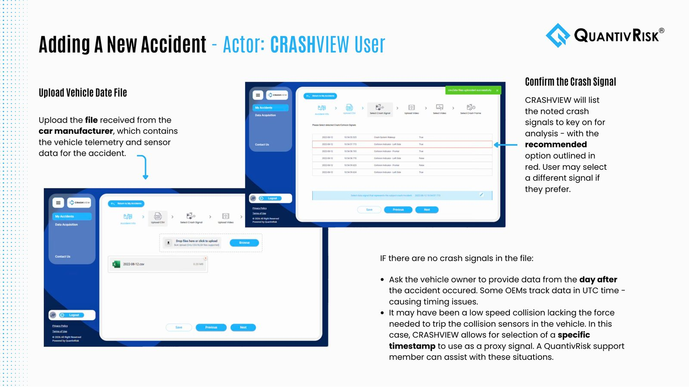

QuantivRisk
A UX design internship at an InsurTech company that uses vehicle data to determine fault in crashes. I designed CRASHVIEW’s reanalysis flow, audited and redesigned the company website and wrote the platform’s user guide.
Problem
Users had no safe way to fix accident details or videos after a crash was analyzed.
My role
UX Design Intern
Solution
A versioned reanalyze flow with upfront warnings, a clearer website for four audiences and a 24-page guide.
Outcome
Edits create Analysis 2 while Analysis 1 is kept, and users see exactly what changed.
What I did
- Designed the 5-step reanalysis flow in Figma, working daily with the development team
- Prototyped the Data dropdown so developers could see exactly how it behaves
- Audited 9 pages of the company website and mocked up a redesign of each
- Pushed to add attorneys, an audience the site left out, with a new use-case page
- Wrote and designed the 24-page CRASHVIEW user guide

Overview.pngTXTProblem.txt
Reanalyze Flow.figPrototype Demo.mp4FIGWebsite Audit.figUser Guide.pdf
Outcome.pngCRASHVIEW syncs dashcam video with vehicle signals like braking, steering and seatbelt status to show what actually happened in a crash. I worked daily with the development team on three pieces of the product.
Accident details and videos sometimes change after a crash has been analyzed — a wrong city, a missing video. Users needed a way to fix them without losing the original analysis.
How might we let users correct accident data confidently, knowing exactly what will change and what will be kept?
I designed the flow for editing an accident and re-running the analysis, in Figma.
My partI designed all five steps, from the Data dropdown to the “what changed” confirmation, and worked through each one with the development team.


Why I designed it this way
A walkthrough of the clickable Data dropdown prototype.
My partI built this clickable prototype in Figma to show the developers exactly how the dropdown should behave.
My partI ran the audit on my own, mocked up every updated page in Figma and presented the recommendations, including adding attorneys as an audience the site had left out.
I audited QuantivRisk’s website page by page — Home, About, Our Team, Our Products, Car Data Insights and four Use Case pages — and mocked up an updated version of each in Figma, side by side with the current page and annotated.
Easier to scan
Centered the navigation and moved the logo top-left, used a darker blue for readable contrast, bolded key phrases, turned dense paragraphs into bulleted checkpoints and enlarged the three key highlights on each page.
A missing audience
Attorneys weren’t represented anywhere. I added them to the home page, the Use Cases dropdown and a new use-case page: “Build Stronger Cases,” with sections on evaluating cases at intake and building on facts, not testimony.
Consistency and trust
Gave every use-case page the same header, highlight and contact-form pattern; fixed LinkedIn links that sent visitors to the wrong team members and made them open in a new tab; updated team photos; and replaced an AI-looking “Book a demo” background.
I wrote and designed a 24-page CRASHVIEW user guide covering every audience, from consumers requesting their data to adjusters reviewing crash dashboards.
My partI wrote every page, took and annotated the screenshots, and laid out the guide.


What I delivered in one summer:
- A versioned reanalysis flow and clickable prototype, designed with the development team
- A 9-page website audit with redesigned pages, including a new page for attorneys
- A 24-page user guide for every CRASHVIEW audience